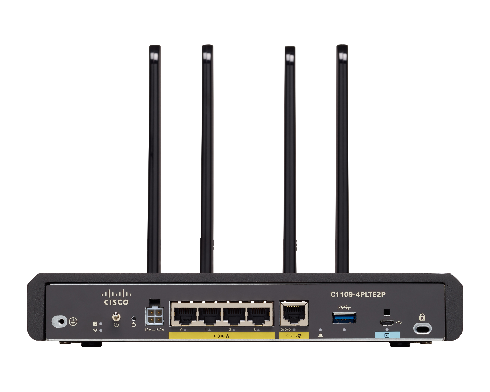

11.2.1 Video - Comunicaciones inalámbricas
11.2.2 LAN inalámbricas frente a redes cableadas
Las WLAN usan radiofrecuencias (RF) en lugar de cables en la capa física y la subcapa MAC de la capa de enlace de datos. Las WLAN comparten un origen similar con las LAN Ethernet. El IEEE adoptó la cartera 802 LAN/MAN de estándares de arquitectura de redes informáticas. Los dos grupos de trabajo 802 dominantes son Ethernet 802.3 (que define Ethernet para redes LAN cableadas) y 802.11 (que define Ethernet para redes WLAN). Hay diferencias importantes entre los dos.
Las WLAN usan radiofrecuencias (RF) en lugar de cables en la capa física y la subcapa MAC de la capa de enlace de datos. Las WLAN comparten un origen similar con las LAN Ethernet. El IEEE adoptó la cartera 802 LAN/MAN de estándares de arquitectura de redes informáticas. Los dos grupos de trabajo 802 dominantes son Ethernet 802.3 (que define Ethernet para redes LAN cableadas) y 802.11 (que define Ethernet para redes WLAN). Hay diferencias importantes entre los dos.
La tabla resume las diferencias entre LAN inalámbricas y cableadas.
|
Característica |
LAN inalámbrica 802.11 |
802.3 LANs Ethernet inalámbricas |
|---|---|---|
|
Capa física |
Frecuencia de radio (RF) | Cables físicos |
| Acceso de medios | Prevención de colisiones | Detección de colisiones |
| >Disponibilidad | Cualquiera con una NIC inalámbrica en el rango de un punto de acceso | Se requiere conexión por cable físico |
| Interferencia en la señal | Sí | Mínimo |
| Regulación | Diferentes regulaciones por país | El estándar IEEE dictamina |
11.2.3 802.11 Estructura del Frame
Recuerde que todas los frames de capa 2 consisten en un encabezado, carga útil y sección de secuencia de verificación de trama (FCS). El formato del Frame 802.11 es similar al formato de Frame de Ethernet, excepto que contiene más campos, como se muestra en la figura.

todas las tramas 802.11 inalámbricas contienen los siguientes campos;
11.2.4 CSMA/CA
Las WLAN son configuraciones de medios compartidos semidúplex. Half-duplex significa que solo un cliente puede transmitir o recibir en dado momento. Medios compartidos significa que todos los clientes pueden transmitir y recibir en el mismo canal de radio. S Esto crea un problema porque un cliente inalambrico no puede escuchar mientras está enviando, lo que hace que sea imposible detectar una colisión.
Para resolver este problema las WLAN utilizan el acceso múltiple con detección de operador con evitación de colisiones (CSMA / CA) para determinar cómo y cuándo enviar datos. Un cliente inalámbrico hace lo siguiente:
11.2.5 Asociación de AP de cliente inalámbrico
Para que los dispositivos inalámbricos se comuniquen a través de una red, primero se deben asociar a un AP o un router inalámbrico. Una parte importante del proceso 802.11 es descubrir una WLAN y conectarse a esta. Los dispositivos inalámbricos completan el siguiente proceso de tres etapas, como muestra en la figura:

Para lograr una asociación exitosa, un cliente inalámbrico y un AP deben acordar parámetros específicos: Para permitir la negociación de estos procesos, se deben configurar los parámetros en el AP y posteriormente en el cliente.
11.2.6 Modo de entrega pasiva y activa
Los dispositivos inalámbricos deben detectar un AP o un router inalámbrico y se deben conectar a este. Los clientes inalámbricos se conectan al AP mediante un proceso de análisis (sondeo). Este proceso puede ser pasivo o activo.
Modo pasivo

Modo activo
En modo activo: los clientes inalámbricos deben conocer el nombre del SSID. El cliente inalámbrico inicia el proceso al transmitir por difusión una trama de solicitud de sondeo en varios canales. La solicitud de sondeo incluye el nombre del SSID y los estándares admitidos. Los AP configurados con el SSID enviarán una respuesta de prueba que incluye el SSID, los estándares admitidos y la configuración de seguridad. Si un AP o un router inalámbrico se configuran para que no transmitan por difusión las tramas de señal, es posible que se requiera el modo activo.
Para descubrir las redes WLAN cercanas, un cliente inalámbrico también podría enviar una solicitud de sondeo sin un nombre de SSID. Los AP configurados para transmitir por difusión tramas de señal responderían al cliente inalámbrico con una respuesta de sondeo y proporcionarían el nombre del SSID. Los AP con la característica de transmisión del SSID por difusión deshabilitada no responden.

11.2.7 Verifique su conocimiento - Pasos en el proceso de cliente y AP
11.2.8 Dispositivos inalámbricos - AP, LWAP y WLC
Una implementación común de tecnología inalámbrica de datos permite a los dispositivos conectarse en forma inalámbrica a través de una LAN. En general, una LAN inalámbrica requiere puntos de acceso inalámbrico y clientes que tengan NIC inalámbricas. Los routers inalámbricos domésticos y de pequeñas empresas integran las funciones de un router, un switch y un punto de acceso en un solo dispositivo, como el que se ve en la figura. Tenga en cuenta que, en redes pequeñas, es posible que el router inalámbrico sea el único AP debido a que solamente se brinda cobertura inalámbrica a un área pequeña. En redes de más tamaño, puede haber muchos AP.

Todas las funciones de control y gestión de los AP en una red pueden centralizarse en una controladora de LAN inalámbrica (WLC, Wireless LAN Controller). Cuando se utiliza una WLC, los AP ya no actúan de manera autónoma, sino que actúan como AP ligeros (LWAP, Lightweight AP). Los LWAP solamente reenvían datos entre la LAN inalámbrica y la WLC. Todas las funciones de administración, como definir SSID y autenticar, se llevan a cabo en la WLC centralizada, en lugar de en cada AP individual. Una de las tantas ventajas de centralizar las funciones de administración de AP en la WLC es simplificar la configuración y el monitoreo de numerosos puntos de acceso.